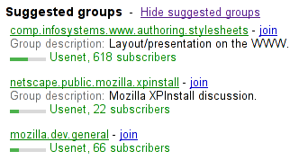

button elementselect element.tabindex attribute
specified. If the element is the first child of a select element, then it may also
have zero or one descendant selectedcontent element.command — Indicates to the targeted element which action to take.
commandfor — Targets another element to be invoked.
disabled — Whether the form control is disabled
form — Associates the element with a form element
formaction — URL to use for form submission
formenctype — Entry list encoding type to use for form submission
formmethod — Variant to use for form submission
formnovalidate — Bypass form control validation for form submission
formtarget — Navigable for form submission
name — Name of the element to use for form submission and in the form.elements API
popovertarget — Targets a popover element to toggle, show, or hide
popovertargetaction — Indicates whether a targeted popover element is to be toggled, shown, or hidden
type — Type of button
value — Value to be used for form submission
[Exposed=Window]
interface HTMLButtonElement : HTMLElement {
[HTMLConstructor] constructor();
[CEReactions, ReflectSetter] attribute DOMString command;
[CEReactions, Reflect] attribute Element? commandForElement;
[CEReactions, Reflect] attribute boolean disabled;
readonly attribute HTMLFormElement? form;
[CEReactions, ReflectSetter] attribute USVString formAction;
[CEReactions] attribute DOMString formEnctype;
[CEReactions] attribute DOMString formMethod;
[CEReactions, Reflect] attribute boolean formNoValidate;
[CEReactions, Reflect] attribute DOMString formTarget;
[CEReactions, Reflect] attribute DOMString name;
[CEReactions, ReflectSetter] attribute DOMString type;
[CEReactions, Reflect] attribute DOMString value;
readonly attribute boolean willValidate;
readonly attribute ValidityState validity;
readonly attribute DOMString validationMessage;
boolean checkValidity();
boolean reportValidity();
undefined setCustomValidity(DOMString error);
readonly attribute NodeList labels;
};
HTMLButtonElement includes PopoverTargetAttributes;The button element represents a button labeled by its contents.
The element is a button.
The type attribute
controls the behavior of the button when it is activated. It is an enumerated
attribute with the following keywords and states:
| Keyword | State | Brief description |
|---|---|---|
submit
| Submit Button | Submits the form. |
reset
| Reset Button | Resets the form. |
button
| Button | Does nothing. |
The attribute's missing value default and invalid value default are both the Auto state.
A button element is said to be a submit button if any of the following are true:
the type attribute is in the Auto state, both the command and commandfor content attributes are not present, and the
parent node is not a select element;
or
the type attribute is in the Submit Button state.
Constraint validation: If the element is not a submit button, the element is barred from constraint validation.
If a button element is the first child
which is an element of a select element, then it is
inert.
If specified, the commandfor attribute value must be the ID of an element in the same tree as the button with the commandfor attribute.
The command
attribute is an enumerated attribute with the following keywords and states:
| Keyword | State | Brief description |
|---|---|---|
toggle-popover
| Toggle Popover | Shows or hides the targeted popover element.
|
show-popover
| Show Popover | Shows the targeted popover element.
|
hide-popover
| Hide Popover | Hides the targeted popover element.
|
close
| Close | Closes the targeted dialog element.
|
request-close
| Request Close | Requests to close the targeted dialog element.
|
show-modal
| Show Modal | Opens the targeted dialog element as modal.
|
| A custom command keyword | Custom | Only dispatches the command event on the targeted
element.
|
The attribute's missing value default and invalid value default are both the Unknown state.
A custom command keyword is a string that
starts with "--".
To determine if a command is valid for a
target given a command attribute
command and an element target:
If command is in the Unknown state, then return false.
If command is in the Custom state, then return true.
If target is not an HTML element, then return false.
If command is in any of the following states:
then return true.
If this standard does not define is valid command steps for target's local name, then return false.
Otherwise, return the result of running target's corresponding is valid command steps given command.
The intent is to avoid dispatching a command event on an element type that does not support that command.
However, element state is not considered. If an element can support a particular command, the event is dispatched, even if that element is in a state where it cannot execute that command.
This means, for example, that command events are dispatched for popover commands on all HTML elements, even if they do not have a popover attribute.
A button element element's activation behavior given
event is:
If element is disabled, then return.
If element's node document is not fully active, then return.
If element has a form owner:
If element is a submit button, then submit element's form owner from element with userInvolvement set to event's user navigation involvement, and return.
If element's type attribute is in the
Reset Button state, then reset element's form owner, and
return.
If element's type attribute is in the
Auto state, then return.
Let target be the result of running element's get the commandfor-associated
element.
If target is not null:
Let command be element's command attribute.
If the result of determining if a command is valid for a target given command and target is false, then return.
Let continue be the result of firing an
event named command at target, using
CommandEvent, with its command
attribute initialized to command, its source attribute initialized to element,
and its cancelable attribute initialized to
true.
DOM standard issue #1328 tracks how to better standardize associated event data in a way which makes sense on Events. Currently an event attribute initialized to a value cannot also have a getter, and so an internal slot (or map of additional fields) is required to properly specify this.
If continue is false, then return.
If target is not connected, then return.
If command is in the Custom state, then return.
If command is in the Hide Popover state:
If the result of running check popover validity given target, true, false, and null is true, then run the hide popover algorithm given target, true, true, false, and element.
Otherwise, if command is in the Toggle Popover state:
If the result of running check popover validity given target, false, false, and null is true, then run the show popover algorithm given target, false, and this.
Otherwise, if the result of running check popover validity given target, true, false, and null is true, then run the hide popover algorithm given target, true, true, false, and element.
Otherwise, if command is in the Show Popover state:
If the result of running check popover validity given target, false, false, and null is true, then run the show popover algorithm given target, false, and this.
Otherwise, if this standard defines command steps for target's local name, then run the corresponding command steps given target, element, and command.
Otherwise, run the popover target attribute activation behavior given element and event's target.
An HTML element can have specific is valid command steps and command steps defined for the element's local name.
The form attribute is used to explicitly associate the
button element with its form owner. The name attribute represents the element's name. The disabled attribute is used to make the control non-interactive and
to prevent its value from being submitted. The formaction,
formenctype, formmethod, formnovalidate, and formtarget attributes are attributes for form
submission.
The formnovalidate attribute can be
used to make submit buttons that do not trigger the constraint validation.
The formaction, formenctype, formmethod, formnovalidate, and formtarget must not be specified if the element is not
a submit button.
The command getter steps are:
The value
attribute gives the element's value for the purposes of form submission. The element's value is the value of the element's value attribute, if there is one; otherwise the empty string.
The element's optional value is the value of the
element's value attribute, if there is one; otherwise
null.
A button (and its value) is only included in the form submission if the button itself was used to initiate the form submission.
The type
getter steps are:
If this is a submit button, then
return "submit".
Assert: state is not in the Submit Button state.
If state is in the Auto
state, then return "button".
Return the keyword value corresponding to state.
The willValidate, validity, and validationMessage IDL attributes, and the checkValidity(), reportValidity(), and setCustomValidity() methods, are part of the
constraint validation API. The labels IDL
attribute provides a list of the element's labels. The disabled, form, and name IDL attributes are part of the element's forms API.
The following button is labeled "Show hint" and pops up a dialog box when activated:
<button type=button
onclick="alert('This 15-20 minute piece was composed by George Gershwin.')">
Show hint
</button>The following shows how buttons can use commandfor to show and hide an element with
the popover attribute when activated:
<button type=button
commandfor="the-popover"
command="show-popover">
Show menu
</button>
<div popover
id="the-popover">
<button commandfor="the-popover"
command="hide-popover">
Hide menu
</button>
</div>
The following shows how buttons can use commandfor with a custom command keyword on an element, demonstrating
how one could use custom commands for unspecified behavior:
<button type=button
commandfor="the-image"
command="--rotate-landscape">
Rotate Left
</button>
<button type=button
commandfor="the-image"
command="--rotate-portrait">
Rotate Right
</button>
<img id="the-image"
src="photo.jpg">
<script>
const image = document.getElementById("the-image");
image.addEventListener("command", (event) => {
if ( event.command == "--rotate-landscape" ) {
event.target.style.rotate = "-90deg"
} else if ( event.command == "--rotate-portrait" ) {
event.target.style.rotate = "0deg"
}
});
</script>
select elementbutton elements if the select is a drop-down
box, followed by zero or more select element inner content
elements.autocomplete — Hint for form autofill feature
disabled — Whether the form control is disabled
form — Associates the element with a form element
multiple — Whether to allow multiple values
name — Name of the element to use for form submission and in the form.elements API
required — Whether the control is required for form submission
size — Size of the control
multiple attribute or a size attribute with a value > 1: for authors; for implementers.[Exposed=Window]
interface HTMLSelectElement : HTMLElement {
[HTMLConstructor] constructor();
[CEReactions, ReflectSetter] attribute DOMString autocomplete;
[CEReactions, Reflect] attribute boolean disabled;
readonly attribute HTMLFormElement? form;
[CEReactions, Reflect] attribute boolean multiple;
[CEReactions, Reflect] attribute DOMString name;
[CEReactions, Reflect] attribute boolean required;
[CEReactions, Reflect, ReflectDefault=0] attribute unsigned long size;
readonly attribute DOMString type;
[SameObject] readonly attribute HTMLOptionsCollection options;
[CEReactions] attribute unsigned long length;
getter HTMLOptionElement? item(unsigned long index);
HTMLOptionElement? namedItem(DOMString name);
[CEReactions] undefined add((HTMLOptionElement or HTMLOptGroupElement) element, optional (HTMLElement or long)? before = null);
[CEReactions] undefined remove(); // ChildNode overload
[CEReactions] undefined remove(long index);
[CEReactions] setter undefined (unsigned long index, HTMLOptionElement? option);
[SameObject] readonly attribute HTMLCollection selectedOptions;
attribute long selectedIndex;
attribute DOMString value;
readonly attribute boolean willValidate;
readonly attribute ValidityState validity;
readonly attribute DOMString validationMessage;
boolean checkValidity();
boolean reportValidity();
undefined setCustomValidity(DOMString error);
undefined showPicker();
readonly attribute NodeList labels;
};The select element represents a control for selecting amongst a set of
options.
The multiple
attribute is a boolean attribute. If the attribute is present, then the
select element represents a control for selecting zero or more options
from the list of options. If the attribute is
absent, then the select element represents a control for selecting a
single option from the list of options.
The size attribute
gives the number of options to show to the user. The size
attribute, if specified, must have a value that is a valid non-negative integer
greater than zero.
The required
attribute is a boolean attribute. When specified, the user will be required to select
a value before submitting the form.
The form attribute is used to explicitly associate the
select element with its form owner. The name attribute represents the element's name. The disabled attribute is used to make the control non-interactive
and to prevent its value from being submitted. The autocomplete attribute controls how the user agent provides
autofill behavior.
If a select element has a required
attribute specified, does not have a multiple attribute
specified, and has a display size of 1; and if the value of the first option element in the
select element's list of options (if
any) is the empty string, and that option element's parent node is the
select element (and not an optgroup element), then that
option is the select element's placeholder label option.
If a select element has a required
attribute specified, does not have a multiple attribute
specified, and has a display size of 1, then the
select element must have a placeholder label option.
In practice, the requirement stated in the paragraph above can only apply when a
select element does not have a size attribute
with a value greater than 1.
Constraint validation: If the element has its required attribute specified, and either none of the
option elements in the select element's list of options have their selectedness set to true, or the only
option element in the select element's list of options with its selectedness set to true is the placeholder label
option, then the element is suffering from being missing.
The reset algorithm for a select
element selectElement is:
Set selectElement's user validity to false.
For each optionElement of selectElement's list of options:
If optionElement has a selected
attribute, then set optionElement's selectedness to true; otherwise set it to
false.
Set optionElement's dirtiness to false.
Run the selectedness setting algorithm given selectElement.
The user agent should allow the user to pick an option element from a
select element in its list of
options (either through a click, or through unfocusing the element after changing its
value, or through a menu command, or through any other
mechanism) by running the pick an option algorithm given
the select element, the option element, and if the
select's options are being rendered with base appearance, a
corresponding keydown or mouseup event, otherwise null.
To pick an option given a select element
select, an option element option, and an Event or
null event:
If select has the multiple attribute
or select is disabled, then return.
If event is not null and event's canceled flag is set, then return.
If event is a MouseEvent and event's button attribute is not 1, then return.
Set option's selectedness to true.
Set option's dirtiness to true.
Send select update notifications given
select.
If select is being rendered as a drop-down box with base appearance, then run the hide popover algorithm given select's select popover.
If the multiple attribute is absent, whenever an
option element in the select element's list of options has its selectedness set to true, and whenever an
option element with its selectedness set to true is added to the
select element's list of options,
the user agent must set the selectedness of all
the other option elements in its list of
options to false.
If the multiple attribute is absent and the
element's display size is greater than 1, then the user
agent should also allow the user to request that the option whose selectedness is true, if any, be unselected. Upon this
request being conveyed to the user agent, and before the relevant user interaction event is queued (e.g. before the click event), the user agent must set the selectedness of that option element to
false, set its dirtiness to true, and then
send select update notifications.
If the select is being rendered as a drop-down box with base
appearance, then the user agent should allow the user to open the picker given a corresponding select
element select and a corresponding mousedown or
keydown event event:
If event's canceled flag is set, then return.
If event's button attribute is not
1, then return.
Run the show popover algorithm given select's select popover, false, and select.
If the select is being rendered with base appearance, then the user
agent should allow the user to focus another option given the new option
element to focus option and a keydown event
event:
If event's canceled flag is set, then return.
Run the focusing steps on option.
Implementations commonly allow the user to focus the next or previous option via the arrow-up and arrow-down keys, focus the first or last option via the Home or End keys, or focus the first or last option in the viewport of the picker via the PageUp or PageDown keys.
Which particular keys of the keyboard cause these actions might differ across implementations and platforms. The ARIA Authoring Practices Guide has good recommendations for this behavior.
If the multiple attribute is present, and the
element is not disabled, then the user agent should
allow the user to toggle the selectedness of the option elements in
its list of options that are themselves not disabled. Upon such an element being toggled (either through a click, or through a menu command, or any other mechanism), and before the relevant user
interaction event is queued (e.g. before a related click event), the selectedness of the option element must
be changed (from true to false or false to true), the dirtiness of the element must be set to true, and the
user agent must send select update notifications.
The display size of a select element is the
result of applying the rules for parsing non-negative integers to the value of the
element's size attribute, if it has one and parsing it is
successful. If applying those rules to the attribute's value is not successful, or if the size attribute is absent, then the element's display size is 4 if the element's multiple content attribute is present, and 1 otherwise.
To get the list of options given a
select element select:
Let options be « ».
Let node be the first child of select in tree order.
While node is not null:
If any of the following conditions are true:
node is a select element;
node is an hr element;
node is an option element;
node is a datalist element;
node is an optgroup element and node has an
ancestor optgroup in between itself and select,
then set node to the next descendant of select in tree order, excluding node's descendants, if any such node exists; otherwise null.
Otherwise, set node to the next descendant of select in tree order, if any such node exists; otherwise null.
Return options.
If an option element in the list of
options asks for a reset, then run that
select element's selectedness setting algorithm.
The selectedness setting algorithm, given a select element
element, is to run the following steps:
If element's multiple attribute is
absent, and element's display size is 1,
and no option elements in the element's list of options have their selectedness set to true, then set the selectedness of the first option
element in the list of options in
tree order that is not disabled,
if any, to true, and return.
If element's multiple attribute is
absent, and two or more option elements in element's list of options have their selectedness set to true, then set the selectedness of all but the last option
element with its selectedness set to true in
the list of options in tree order
to false.
To send select update notifications for a select element
element, queue an element task on the user interaction task
source given element to run these steps:
Run update a select's selectedcontent given
element.
Run clone selected option into select button given
element.
Fire an event named input at element, with the bubbles and composed
attributes initialized to true.
Fire an event named change at element, with the bubbles attribute initialized to true.
select.typeReturns "select-multiple" if the element has a multiple attribute, and "select-one"
otherwise.
select.optionsReturns an HTMLOptionsCollection of the list of options.
select.length [ = value ]Returns the number of elements in the list of options.
When set to a smaller number, truncates the number of option elements in the
select.
When set to a greater number, adds new blank option elements to the
select.
element = select.item(index)select[index]Returns the item with index index from the list of options. The items are sorted in tree order.
element = select.namedItem(name)Returns the first item with ID or name name from the list of options.
Returns null if no element with that ID could be found.
select.add(element [, before ])Inserts element before the node given by before.
The before argument can be a number, in which case element is inserted before the item with that number, or an element from the list of options, in which case element is inserted before that element.
If before is omitted, null, or a number out of range, then element will be added at the end of the list.
This method will throw a "HierarchyRequestError"
DOMException if element is an ancestor of the element into which it is
to be inserted.
select.selectedOptionsReturns an HTMLCollection of the list
of options that are selected.
select.selectedIndex [ = value ]Returns the index of the first selected item, if any, or −1 if there is no selected item.
Can be set, to change the selection.
select.value [ = value ]Returns the value of the first selected item, if any, or the empty string if there is no selected item.
Can be set, to change the selection.
select.showPicker()Shows any applicable picker UI for select, so that the user can select a value.
Throws an "InvalidStateError" DOMException if
select is not mutable.
Throws a "NotAllowedError" DOMException if called
without transient user activation.
Throws a "SecurityError" DOMException if
select is inside a cross-origin iframe.
Throws a "NotSupportedError" DOMException if
select is not being rendered.
The type IDL
attribute, on getting, must return the string "select-one" if the multiple attribute is absent, and the string "select-multiple" if the multiple
attribute is present.
The options IDL attribute must return an
HTMLOptionsCollection rooted at the select node, whose filter matches
the elements in the list of options.
The options collection is also mirrored on the
HTMLSelectElement object. The supported property indices at any instant
are the indices supported by the object returned by the options attribute at that instant.
The length
IDL attribute must return the number of nodes represented by the options collection.
On setting, it must act like the attribute of the same name on the options collection.
The item(index) method must return the value returned
by the method of the same name on the options collection, when invoked with the same argument.
The namedItem(name) method must return the value
returned by the method of the same name on the
options collection, when invoked with the same
argument.
When the user agent is to set the value of a new indexed
property or set the value of an existing indexed property for a
select element, it must instead run the
corresponding algorithm on the select element's options collection.
Similarly, the add(element, before) method must act
like its namesake method on that same options
collection.
The remove()
method must act like its namesake method on that same options collection when it has arguments, and like its namesake
method on the ChildNode interface implemented by the HTMLSelectElement
ancestor interface Element when it has no arguments.
The selectedOptions IDL attribute must return an
HTMLCollection rooted at the select node, whose filter matches the
elements in the list of options that have their
selectedness set to true.
The selectedIndex getter steps are to return the index of the first option element in
this's list of options in tree
order that has its selectedness set to
true, if any. If there isn't one, then return −1.
The selectedIndex setter steps are:
Let firstMatchingOption be null.
For each option of this's list of options:
Set option's selectedness to false.
If firstMatchingOption is null and option's index is equal to the given value, then set firstMatchingOption to option.
If firstMatchingOption is not null, then set firstMatchingOption's selectedness to true and set firstMatchingOption's dirtiness to true.
Run update a select's selectedcontent given
this.
This can result in no element having a selectedness set to true even in the case of the
select element having no multiple
attribute and a display size of 1.
The value
getter steps are to return the value of the
first option element in this's list of options in tree order that has its
selectedness set to true, if any. If there isn't
one, then return the empty string.
The value setter steps are:
Let firstMatchingOption be null.
For each option of this's list of options:
Set option's selectedness to false.
If firstMatchingOption is null and option's value is equal to the given value, then set firstMatchingOption to option.
If firstMatchingOption is not null, then set firstMatchingOption's selectedness to true and set firstMatchingOption's dirtiness to true.
Run update a select's selectedcontent given
this.
This can result in no element having a selectedness set to true even in the case of the
select element having no multiple
attribute and a display size of 1.
For historical reasons, the default value of the size IDL attribute does not return the actual size used, which, in
the absence of the size content attribute, is either 1 or 4
depending on the presence of the multiple
attribute.
The willValidate, validity, and validationMessage IDL attributes, and the checkValidity(), reportValidity(), and setCustomValidity() methods, are part of the
constraint validation API. The labels IDL
attribute provides a list of the element's labels. The disabled, form, and name IDL attributes are part of the element's forms API.
The following example shows how a select element can be used to offer the user
with a set of options from which the user can select a single option. The default option is
preselected.
<p>
<label for="unittype">Select unit type:</label>
<select id="unittype" name="unittype">
<option value="1"> Miner </option>
<option value="2"> Puffer </option>
<option value="3" selected> Snipey </option>
<option value="4"> Max </option>
<option value="5"> Firebot </option>
</select>
</p>When there is no default option, a placeholder can be used instead:
<select name="unittype" required>
<option value=""> Select unit type </option>
<option value="1"> Miner </option>
<option value="2"> Puffer </option>
<option value="3"> Snipey </option>
<option value="4"> Max </option>
<option value="5"> Firebot </option>
</select>Here, the user is offered a set of options from which they can select any number. By default, all five options are selected.
<p>
<label for="allowedunits">Select unit types to enable on this map:</label>
<select id="allowedunits" name="allowedunits" multiple>
<option value="1" selected> Miner </option>
<option value="2" selected> Puffer </option>
<option value="3" selected> Snipey </option>
<option value="4" selected> Max </option>
<option value="5" selected> Firebot </option>
</select>
</p>Sometimes, a user has to select one or more items. This example shows such an interface.
<label>
Select the songs from that you would like on your Act II Mix Tape:
<select multiple required name="act2">
<option value="s1">It Sucks to Be Me (Reprise)
<option value="s2">There is Life Outside Your Apartment
<option value="s3">The More You Ruv Someone
<option value="s4">Schadenfreude
<option value="s5">I Wish I Could Go Back to College
<option value="s6">The Money Song
<option value="s7">School for Monsters
<option value="s8">The Money Song (Reprise)
<option value="s9">There's a Fine, Fine Line (Reprise)
<option value="s10">What Do You Do With a B.A. in English? (Reprise)
<option value="s11">For Now
</select>
</label>Occasionally it can be useful to have a separator:
<label>
Select the song to play next:
<select required name="next">
<option value="sr">Random
<hr>
<option value="s1">It Sucks to Be Me (Reprise)
<option value="s2">There is Life Outside Your Apartment
…Here is an example which uses div, legend,
img, button, and selectedcontent elements:
<select>
<button>
<selectedcontent></selectedcontent>
</button>
<div
<optgroup>
<legend>WHATWG Specifications</legend>
<option>
<img src="html.jpg" alt="">
HTML
</option>
<option>
<img src="dom.jpg" alt="">
DOM
</option>
</optgroup>
</div>
<div
<optgroup>
<legend>W3C Specifications</legend>
<option>
<img src="forms.jpg" alt="">
CSS Form Control Styling
</option>
<option>
<img src="pseudo.jpg" alt="">
CSS Pseudo-Elements
</option>
<optgroup>
</div>
</select>datalist elementoption and script-supporting elements.[Exposed=Window]
interface HTMLDataListElement : HTMLElement {
[HTMLConstructor] constructor();
[SameObject] readonly attribute HTMLCollection options;
};The datalist element represents a set of option elements that
represent predefined options for other controls. In the rendering, the datalist
element represents nothing and it, along with its children, should
be hidden.
The datalist element can be used in two ways. In the simplest case, the
datalist element has just option element children.
<label>
Animal:
<input name=animal list=animals>
<datalist id=animals>
<option value="Cat">
<option value="Dog">
</datalist>
</label>In the more elaborate case, the datalist element can be given contents that are to
be displayed for down-level clients that don't support datalist. In this case, the
option elements are provided inside a select element inside the
datalist element.
<label>
Animal:
<input name=animal list=animals>
</label>
<datalist id=animals>
<label>
or select from the list:
<select name=animal>
<option value="">
<option>Cat
<option>Dog
</select>
</label>
</datalist>The datalist element is hooked up to an input element using the list attribute on the input element.
Each option element that is a descendant of the datalist element,
that is not disabled, and whose value is a string that isn't the empty string, represents a
suggestion. Each suggestion has a value and a label.
datalist.optionsReturns an HTMLCollection of the option elements of the
datalist element.
The options IDL attribute must return an
HTMLCollection rooted at the datalist node, whose filter matches
option elements.
Constraint validation: If an element has a datalist element
ancestor, it is barred from constraint validation.
optgroup elementselect element inner content elements.select element.legend element followed by zero or more optgroup
element inner content elements.optgroup element's end tag can be omitted
if the optgroup element is
immediately followed by another optgroup element, if it is immediately followed by an
hr element, or if there is no more content in the parent
element.disabled — Whether the form control is disabled
label — User-visible label
[Exposed=Window]
interface HTMLOptGroupElement : HTMLElement {
[HTMLConstructor] constructor();
[CEReactions, Reflect] attribute boolean disabled;
[CEReactions, Reflect] attribute DOMString label;
};The optgroup element represents a group of option elements with a common
label.
The element's group of option elements
consists of the option elements that are descendants of the optgroup
element.
When showing option elements in select elements, user agents should
show the option elements of such groups as being related to each other and separate
from other option elements.
The disabled attribute is a boolean
attribute and can be used to disable a group of option elements together.
The label
attribute must be specified if the optgroup has no child legend
element.
To get an optgroup element's label,
given an optgroup optgroup:
If optgroup has a child legend element, then return the result of
stripping and collapsing ASCII
whitespace from the concatenation of data of all the
Text node descendants of optgroup's first child legend
element, in tree order, excluding any that are descendants of descendants of the
legend that are themselves script or SVG
script elements.
Otherwise, return the value of optgroup's label attribute.
The value of the optgroup label
algorithm gives the name of the group, for the purposes of the user interface. User agents should use this attribute's value when labeling the group of
option elements in a select element.
There is no way to select an optgroup element. Only
option elements can be selected. An optgroup element merely provides a
label for a group of option elements.
The following snippet shows how a set of lessons from three courses could be offered in a
select drop-down widget:
<form action="courseselector.dll" method="get">
<p>Which course would you like to watch today?
<p><label>Course:
<select name="c">
<optgroup label="8.01 Physics I: Classical Mechanics">
<option value="8.01.1">Lecture 01: Powers of Ten
<option value="8.01.2">Lecture 02: 1D Kinematics
<option value="8.01.3">Lecture 03: Vectors
<optgroup label="8.02 Electricity and Magnetism">
<option value="8.02.1">Lecture 01: What holds our world together?
<option value="8.02.2">Lecture 02: Electric Field
<option value="8.02.3">Lecture 03: Electric Flux
<optgroup label="8.03 Physics III: Vibrations and Waves">
<option value="8.03.1">Lecture 01: Periodic Phenomenon
<option value="8.03.2">Lecture 02: Beats
<option value="8.03.3">Lecture 03: Forced Oscillations with Damping
</select>
</label>
<p><input type=submit value="▶ Play">
</form>option elementselect element inner content elements.optgroup element inner content elements.select element.datalist element.optgroup element.label attribute and a value attribute: Nothing.label attribute but no value attribute: Text.label attribute and is not a
descendant of a datalist element: Zero or more option element
inner content elements.label attribute and is a
descendant of a datalist element: Text.option element's end tag can be omitted if
the option element is immediately followed by another option element, if
it is immediately followed by an optgroup element, if it is immediately followed by
an hr element, or if there is no more content in the parent element.disabled — Whether the form control is disabled
label — User-visible label
selected — Whether the option is selected by default
value — Value to be used for form submission
[Exposed=Window,
LegacyFactoryFunction=Option(optional DOMString text = "", optional DOMString value, optional boolean defaultSelected = false, optional boolean selected = false)]
interface HTMLOptionElement : HTMLElement {
[HTMLConstructor] constructor();
[CEReactions, Reflect] attribute boolean disabled;
readonly attribute HTMLFormElement? form;
[CEReactions, ReflectSetter] attribute DOMString label;
[CEReactions, Reflect="selected"] attribute boolean defaultSelected;
attribute boolean selected;
[CEReactions, ReflectSetter] attribute DOMString value;
[CEReactions] attribute DOMString text;
readonly attribute long index;
};The option element represents an option in a select
element or as part of a list of suggestions in a datalist element.
In certain circumstances described in the definition of the select element, an
option element can be a select element's placeholder label
option. A placeholder label option does not represent an actual option, but
instead represents a label for the select control.
The disabled
attribute is a boolean attribute. An option element option is
disabled if the following steps return true:
If option's disabled attribute is
present, then return true.
For each ancestor of option's ancestors in reverse tree order:
Return false.
An option element that is disabled must
prevent any click events that are queued on the user interaction task source from being dispatched on the
element.
Being disabled does not prevent all
modifications to the option element. For example, its selectedness could be modified programmatically from
JavaScript. Or, it could be indirectly modified by user action, e.g., if other non-disabled
option elements in the select element were modified.
The label
attribute provides a label for element. The label of an
option element is the value of the label
content attribute, if there is one and its value is not the empty string, or, otherwise, the value
of the element's text IDL attribute.
The label content attribute, if specified, must not be
empty.
The value
attribute provides a value for element. The value of an
option element is the value of the value
content attribute, if there is one, or, if there is not, the result of collect option
text given this and false.
The selected
attribute is a boolean attribute. It represents the default selectedness of the element.
The dirtiness of an option element is
a boolean state, initially false. It controls whether adding or removing the selected content attribute has any effect.
The selectedness of an option
element is a boolean state, initially false. Except where otherwise specified, when the element is
created, its selectedness must be set to true if
the element has a selected attribute. Whenever an
option element's selected attribute is
added, if its dirtiness is false, its selectedness must be set to true. Whenever an
option element's selected attribute is
removed, if its dirtiness is false, its
selectedness must be set to false.
The Option() constructor, when called with three
or fewer arguments, overrides the initial state of the selectedness state to always be false even if the third
argument is true (implying that a selected attribute is
to be set). The fourth argument can be used to explicitly set the initial selectedness state when using the constructor.
A select element whose multiple
attribute is not specified must not have more than one descendant option element with
its selected attribute set.
An option element's index is the number of
option elements that are in the same list of
options but that come before it in tree order. If the option
element is not in a list of options, then the
option element's index is zero.
Each option element has a cached nearest ancestor select
element, which is a select element or null, initially set to null.
To update an option's nearest ancestor select, given an
option option:
Let oldSelect be option's cached nearest ancestor
select element.
Let newSelect be option's option element
nearest ancestor select.
If oldSelect is not newSelect:
If oldSelect is not null, then run the selectedness setting algorithm given oldSelect.
If newSelect is not null, then run the selectedness setting algorithm given newSelect.
Set option's cached nearest ancestor select
element to newSelect.
The option HTML element insertion steps, given
insertedOption, are to run update an option's nearest ancestor
select given insertedOption.
The option HTML element removing steps, given
removedOption and oldParent, are to run update an
option's nearest ancestor select given
removedOption.
The option HTML element moving steps, given movedNode and
oldParent, are to run update an option's nearest ancestor
select given movedNode.
To get the option element nearest ancestor select given an
option option, run these steps. They return a select or
null.
Let ancestorOptgroup be null.
For each ancestor of option's ancestors, in reverse tree order:
Return null.
To maybe clone an option into selectedcontent, given an
option option:
Let select be option's option element nearest
ancestor select.
If all of the following conditions are true:
select is not null;
option's selectedness is true; and
select's enabled
selectedcontent is not null,
then run clone an option into a selectedcontent given
option and select's enabled
selectedcontent.
To clone selected option into select button, given a
select element select:
Let option be the first element of select's option list whose selectedness is set to true, if such an element exists; otherwise null.
Let text be the empty string.
If option is not null, then set text to option's label.
Set select's select fallback button text to text.
When an option element is popped off the stack of open elements of an
HTML parser or XML parser, the user agent must run maybe clone an
option into selectedcontent given the option element.
option.selectedReturns true if the element is selected, and false otherwise.
Can be set, to override the current state of the element.
option.indexReturns the index of the element in its select element's options list.
option.formReturns the element's form element, if any, or null otherwise.
option.textSame as textContent, except that spaces are collapsed and script
elements are skipped.
option = new Option([ text [, value [, defaultSelected [, selected ] ] ] ])Returns a new option element.
The text argument sets the contents of the element.
The value argument sets the value
attribute.
The defaultSelected argument sets the selected attribute.
The selected argument sets whether or not the element is selected. If it is omitted, even if the defaultSelected argument is true, the element is not selected.
The label
getter steps are:
The selected IDL attribute, on getting, must return true if
the element's selectedness is true, and false
otherwise. On setting, it must set the element's selectedness to the new value, set its dirtiness to true, and then cause the element to
ask for a reset.
The index
IDL attribute must return the element's index.
The text
getter steps are to return the result of collect option text given this
and false.
The text setter steps are to string replace
all with the given value within this.
The form
getter steps are:
Let select be this's option element nearest
ancestor select.
If select is null, then return null.
Return select's form owner.
A legacy factory function is provided for creating HTMLOptionElement objects (in
addition to the factory methods from DOM such as createElement()): Option(text, value,
defaultSelected, selected). When invoked, the legacy factory
function must perform the following steps:
Let document be the current global object's associated Document.
Let option be the result of creating an
element given document, "option", and the HTML
namespace.
If text is not the empty string, then append to option a new
Text node whose data is text.
If value is given, then set
an attribute value for option using "value" and value.
If defaultSelected is true, then set an attribute value for option
using "selected" and the empty string.
If selected is true, then set option's selectedness to true; otherwise set its selectedness to false (even if defaultSelected is true).
Return option.
To collect option text, given an option element option and a
boolean includeAltText:
Let text be the empty string.
For each descendant descendant of option in tree order:
If descendant is a script or SVG
script element, then continue skipping all descendants of descendant.
If descendant is a Text node, then set text to the
concatenation of text and descendant's data.
If descendant is an img element and includeAltText is
true, then:
If the value of descendant's alt
attribute is not empty, then set text to the concatenation of text,
" ", the value of descendant's alt attribute, and " ".
Continue skipping all descendants of descendant.
Return the result of strip and collapse ASCII whitespace given text.
When no value
attribute is set on the option element, its text contents are used to generate a
submittable value. In the case that the option element has child elements, this can
lead to unexpected results such as option elements which render differently but have
the same value. In order to address this, setting the value attribute on option elements is
recommended.
textarea elementautocomplete — Hint for form autofill feature
cols — Maximum number of characters per line
dirname — Name of form control to use for sending the element's directionality in form submission
disabled — Whether the form control is disabled
form — Associates the element with a form element
maxlength — Maximum length of value
minlength — Minimum length of value
name — Name of the element to use for form submission and in the form.elements API
placeholder — User-visible label to be placed within the form control
readonly — Whether to allow the value to be edited by the user
required — Whether the control is required for form submission
rows — Number of lines to show
wrap — How the value of the form control is to be wrapped for form submission
[Exposed=Window]
interface HTMLTextAreaElement : HTMLElement {
[HTMLConstructor] constructor();
[CEReactions, ReflectSetter] attribute DOMString autocomplete;
[CEReactions, ReflectPositiveWithFallback, ReflectDefault=20] attribute unsigned long cols;
[CEReactions, Reflect] attribute DOMString dirName;
[CEReactions, Reflect] attribute boolean disabled;
readonly attribute HTMLFormElement? form;
[CEReactions, ReflectNonNegative] attribute long maxLength;
[CEReactions, ReflectNonNegative] attribute long minLength;
[CEReactions, Reflect] attribute DOMString name;
[CEReactions, Reflect] attribute DOMString placeholder;
[CEReactions, Reflect] attribute boolean readOnly;
[CEReactions, Reflect] attribute boolean required;
[CEReactions, ReflectPositiveWithFallback, ReflectDefault=2] attribute unsigned long rows;
[CEReactions, Reflect] attribute DOMString wrap;
readonly attribute DOMString type;
[CEReactions] attribute DOMString defaultValue;
attribute [LegacyNullToEmptyString] DOMString value;
readonly attribute unsigned long textLength;
readonly attribute boolean willValidate;
readonly attribute ValidityState validity;
readonly attribute DOMString validationMessage;
boolean checkValidity();
boolean reportValidity();
undefined setCustomValidity(DOMString error);
readonly attribute NodeList labels;
undefined select();
attribute unsigned long selectionStart;
attribute unsigned long selectionEnd;
attribute DOMString selectionDirection;
undefined setRangeText(DOMString replacement);
undefined setRangeText(DOMString replacement, unsigned long start, unsigned long end, optional SelectionMode selectionMode = "preserve");
undefined setSelectionRange(unsigned long start, unsigned long end, optional DOMString direction);
};The textarea element represents a multiline plain text edit
control for the element's raw
value. The contents of the control represent the control's default value.
The raw value of a textarea
control must be initially the empty string.
This element has rendering requirements involving the bidirectional algorithm.
The readonly attribute is a boolean
attribute used to control whether the text can be edited by the user or not.
In this example, a text control is marked read-only because it represents a read-only file:
Filename: <code>/etc/bash.bashrc</code>
<textarea name="buffer" readonly>
# System-wide .bashrc file for interactive bash(1) shells.
# To enable the settings / commands in this file for login shells as well,
# this file has to be sourced in /etc/profile.
# If not running interactively, don't do anything
[ -z "$PS1" ] && return
...</textarea>Constraint validation: If the readonly attribute is specified on a textarea
element, the element is barred from constraint validation.
When a textarea is mutable, its raw value should be editable by the user: the user
agent should allow the user to edit, insert, and remove text, and to insert and remove line breaks
in the form of U+000A LINE FEED (LF) characters. Any time the user causes the element's raw value to change, the user agent must queue an
element task on the user interaction task source given the
textarea element to fire an event named
input at the textarea element, with the bubbles and composed
attributes initialized to true. User agents may wait for a suitable break in the user's
interaction before queuing the task; for example, a user agent could wait for the user to have not
hit a key for 100ms, so as to only fire the event when the user pauses, instead of continuously
for each keystroke.
A textarea element's dirty value flag must
be set to true whenever the user interacts with the control in a way that changes the raw value.
The cloning steps for textarea
elements given node, copy, and subtree are to propagate the raw value and dirty
value flag from node to copy.
The children changed steps for textarea elements must, if the
element's dirty value flag is false, set the element's
raw value to its child text
content.
The reset algorithm for textarea
elements is to set the user validity to false, the dirty value flag back to false, and the raw value to its child text
content.
When a textarea element is popped off the stack of open elements of
an HTML parser or XML parser, then the user agent must invoke the
element's reset algorithm.
If the element is mutable, the user agent should allow the user to change the writing direction of the element, setting it either to a left-to-right writing direction or a right-to-left writing direction. If the user does so, the user agent must then run the following steps:
Set the element's dir attribute to "ltr" if the user selected a left-to-right writing direction, and
"rtl" if the user selected a right-to-left writing
direction.
Queue an element task on the user interaction task source given
the textarea element to fire an event named
input at the textarea element, with the bubbles and composed
attributes initialized to true.
The cols
attribute specifies the expected maximum number of characters per line. If the cols attribute is specified, its value must be a valid
non-negative integer greater than zero. If applying the rules for
parsing non-negative integers to the attribute's value results in a number greater than
zero, then the element's character width is that
value; otherwise, it is 20.
The user agent may use the textarea element's character width as a hint to the user as to how many
characters the server prefers per line (e.g. for visual user agents by making the width of the
control be that many characters). In visual renderings, the user agent should wrap the user's
input in the rendering so that each line is no wider than this number of characters.
The rows
attribute specifies the number of lines to show. If the rows attribute is specified, its value must be a valid
non-negative integer greater than zero. If applying the rules for
parsing non-negative integers to the attribute's value results in a number greater than
zero, then the element's character height is that
value; otherwise, it is 2.
Visual user agents should set the height of the control to the number of lines given by character height.
The wrap
attribute is an enumerated attribute with the following keywords and states:
| Keyword | State | Brief description |
|---|---|---|
soft
| Soft | Text is not to be wrapped when submitted (though can still be wrapped in the rendering). |
hard
| Hard | Text is to have newlines added by the user agent so that the text is wrapped when it is submitted. |
The attribute's missing value default and invalid value default are both the Soft state.
If the element's wrap attribute is in the Hard state, the cols attribute must be specified.
For historical reasons, the element's value is normalized in three different ways for three
different purposes. The raw value is the value as
it was originally set. It is not normalized. The API
value is the value used in the value IDL
attribute, textLength IDL attribute, and by the
maxlength and minlength content attributes. It is normalized so that line
breaks use U+000A LINE FEED (LF) characters. Finally, there is the value, as used in form submission and other processing models in
this specification. It is normalized as for the API
value, and in addition, if necessary given the element's wrap attribute, additional line breaks are inserted to wrap the
text at the given width.
The algorithm for obtaining the element's API value is to return the element's raw value, with newlines normalized.
The element's value is defined to be the element's API value with the textarea wrapping transformation applied. The textarea wrapping transformation is the following algorithm, as applied to a string:
If the element's wrap attribute is in the Hard state, insert U+000A LINE FEED (LF) characters
into the string using an implementation-defined algorithm so that each line has no
more than character width characters. For the
purposes of this requirement, lines are delimited by the start of the string, the end of the
string, and U+000A LINE FEED (LF) characters.
The maxlength attribute is a form control maxlength attribute.
If the textarea element has a maximum allowed value length, then the
element's children must be such that the length of the value of the element's
descendant text content with newlines
normalized is less than or equal to the element's maximum allowed value
length.
The minlength attribute is a form control minlength attribute.
The required attribute is a boolean
attribute. When specified, the user will be required to enter a value before submitting the
form.
Constraint validation: If the element has its required attribute specified, and the element is mutable, and the element's value is the empty string, then the element is suffering
from being missing.
The placeholder attribute represents a short
hint (a word or short phrase) intended to aid the user with data entry when the control has no
value. A hint could be a sample value or a brief description of the expected format.
The placeholder attribute should not be used as
an alternative to a label. For a longer hint or other advisory text, the title attribute is more appropriate.
These mechanisms are very similar but subtly different: the hint given by the
control's label is shown at all times; the short hint given in the placeholder attribute is shown before the user enters a
value; and the hint in the title attribute is shown when the user
requests further help.
User agents should present this hint to the user when the element's value is the empty string and the control is not focused (e.g. by displaying it inside a blank unfocused control). All U+000D CARRIAGE RETURN U+000A LINE FEED character pairs (CRLF) in the hint, as well as all other U+000D CARRIAGE RETURN (CR) and U+000A LINE FEED (LF) characters in the hint, must be treated as line breaks when rendering the hint.
If a user agent normally doesn't show this hint to the user when the control is
focused, then the user agent should nonetheless show the hint for the control if it
was focused as a result of the autofocus attribute, since
in that case the user will not have had an opportunity to examine the control before focusing
it.
The name attribute represents the element's name.
The dirname attribute controls how the element's directionality is submitted.
The disabled attribute is used to make the control
non-interactive and to prevent its value from being submitted.
The form attribute is used to explicitly associate the
textarea element with its form owner.
The autocomplete attribute controls how the user agent
provides autofill behavior.
textarea.typeReturns the string "textarea".
textarea.valueReturns the current value of the element.
Can be set, to change the value.
The type
IDL attribute must return the value "textarea".
The defaultValue attribute's getter must return the
element's child text content.
The defaultValue attribute's setter must
string replace all with the given value within this element.
The value IDL attribute must, on getting, return the
element's API value. On setting, it must perform the
following steps:
Let oldAPIValue be this element's API value.
Set this element's raw value to the new value.
Set this element's dirty value flag to true.
If the new API value is different from
oldAPIValue, then move the text entry
cursor position to the end of the text control, unselecting any selected text and resetting the selection direction to "none".
The willValidate, validity, and validationMessage IDL attributes, and the checkValidity(), reportValidity(), and setCustomValidity() methods, are part of the
constraint validation API. The labels IDL
attribute provides a list of the element's labels. The select(), selectionStart, selectionEnd, selectionDirection, setRangeText(), and setSelectionRange() methods and IDL
attributes expose the element's text selection. The disabled, form, and name IDL attributes are part of the element's forms API.
Here is an example of a textarea being used for unrestricted free-form text input
in a form:
<p>If you have any comments, please let us know: <textarea cols=80 name=comments></textarea></p>To specify a maximum length for the comments, one can use the maxlength attribute:
<p>If you have any short comments, please let us know: <textarea cols=80 name=comments maxlength=200></textarea></p>To give a default value, text can be included inside the element:
<p>If you have any comments, please let us know: <textarea cols=80 name=comments>You rock!</textarea></p>You can also give a minimum length. Here, a letter needs to be filled out by the user; a template (which is shorter than the minimum length) is provided, but is insufficient to submit the form:
<textarea required minlength="500">Dear Madam Speaker,
Regarding your letter dated ...
...
Yours Sincerely,
...</textarea>A placeholder can be given as well, to suggest the basic form to the user, without providing an explicit template:
<textarea placeholder="Dear Francine,
They closed the parks this week, so we won't be able to
meet your there. Should we just have dinner?
Love,
Daddy"></textarea>To have the browser submit the directionality of the element along with the
value, the dirname attribute can be specified:
<p>If you have any comments, please let us know (you may use either English or Hebrew for your comments):
<textarea cols=80 name=comments dirname=comments.dir></textarea></p>output elementfor — Specifies controls from which the output was calculated
form — Associates the element with a form element
name — Name of the element to use in the form.elements API.[Exposed=Window]
interface HTMLOutputElement : HTMLElement {
[HTMLConstructor] constructor();
[SameObject, PutForwards=value, Reflect="for"] readonly attribute DOMTokenList htmlFor;
readonly attribute HTMLFormElement? form;
[CEReactions, Reflect] attribute DOMString name;
readonly attribute DOMString type;
[CEReactions] attribute DOMString defaultValue;
[CEReactions] attribute DOMString value;
readonly attribute boolean willValidate;
readonly attribute ValidityState validity;
readonly attribute DOMString validationMessage;
boolean checkValidity();
boolean reportValidity();
undefined setCustomValidity(DOMString error);
readonly attribute NodeList labels;
};The output element represents the result of a calculation performed
by the application, or the result of a user action.
This element can be contrasted with the samp element, which is the
appropriate element for quoting the output of other programs run previously.
The for content
attribute allows an explicit relationship to be made between the result of a calculation and the
elements that represent the values that went into the calculation or that otherwise influenced the
calculation. The for attribute, if specified, must contain a
string consisting of an unordered set of unique space-separated tokens, none of which
are identical to another token and each of which must have the value of an ID of an element in the same tree.
The form attribute is used to explicitly associate the
output element with its form owner. The name attribute represents the element's name. The output
element is associated with a form so that it can be easily referenced from the event
handlers of form controls; the element's value itself is not submitted when the form is
submitted.
The element has a default value override (null or a string). Initially it must be null.
The element's default value is determined by the following steps:
If this element's default value override is non-null, then return it.
Return this element's descendant text content.
The reset algorithm for output
elements is to run these steps:
String replace all with this element's default value within this element.
Set this element's default value override to null.
output.value [ = value ]Returns the element's current value.
Can be set, to change the value.
output.defaultValue [ = value ]Returns the element's current default value.
Can be set, to change the default value.
output.typeReturns the string "output".
The value
getter steps are to return this's descendant text content.
The value setter steps are:
Set this's default value override to its default value.
String replace all with the given value within this.
The defaultValue getter steps are to return the result
of running this's default
value.
The defaultValue setter steps are:
If this's default value override is null, then string replace all with the given value within this and return.
Set this's default value override to the given value.
The type
getter steps are to return "output".
The willValidate, validity, and validationMessage IDL attributes, and the checkValidity(), reportValidity(), and setCustomValidity() methods, are part of the
constraint validation API. The labels IDL
attribute provides a list of the element's labels. The form and name IDL attributes
are part of the element's forms API.
A simple calculator could use output for its display of calculated results:
<form onsubmit="return false" oninput="o.value = a.valueAsNumber + b.valueAsNumber">
<input id=a type=number step=any> +
<input id=b type=number step=any> =
<output id=o for="a b"></output>
</form>In this example, an output element is used to report the results of a calculation performed by a remote
server, as they come in:
<output id="result"></output>
<script>
var primeSource = new WebSocket('ws://primes.example.net/');
primeSource.onmessage = function (event) {
document.getElementById('result').value = event.data;
}
</script>progress elementprogress element descendants.value — Current value of the element
max — Upper bound of range
[Exposed=Window]
interface HTMLProgressElement : HTMLElement {
[HTMLConstructor] constructor();
[CEReactions, ReflectSetter] attribute double value;
[CEReactions, ReflectPositive, ReflectDefault=1.0] attribute double max;
readonly attribute double position;
readonly attribute NodeList labels;
};The progress element represents the completion progress of a task.
The progress is either indeterminate, indicating that progress is being made but that it is not
clear how much more work remains to be done before the task is complete (e.g. because the task is
waiting for a remote host to respond), or the progress is a number in the range zero to a maximum,
giving the fraction of work that has so far been completed.
There are two attributes that determine the current task completion represented by the element.
The value
attribute specifies how much of the task has been completed, and the max attribute specifies how much work
the task requires in total. The units are arbitrary and not specified.
To make a determinate progress bar, add a value attribute with the current progress (either a number from
0.0 to 1.0, or, if the max attribute is specified, a number
from 0 to the value of the max attribute). To make an
indeterminate progress bar, remove the value
attribute.
Authors are encouraged to also include the current value and the maximum value inline as text inside the element, so that the progress is made available to users of legacy user agents.
Here is a snippet of a web application that shows the progress of some automated task:
<section>
<h2>Task Progress</h2>
<p>Progress: <progress id=p max=100><span>0</span>%</progress></p>
<script>
var progressBar = document.getElementById('p');
function updateProgress(newValue) {
progressBar.value = newValue;
progressBar.getElementsByTagName('span')[0].textContent = newValue;
}
</script>
</section>(The updateProgress() method in this example would be called by some
other code on the page to update the actual progress bar as the task progressed.)
The value and max attributes, when present, must have values that are valid floating-point numbers. The value attribute, if present, must have a value greater than or
equal to zero, and less than or equal to the value of the max attribute, if present, or 1.0, otherwise. The max attribute, if present, must have a value greater than
zero.
The progress element is the wrong element to use for something that
is just a gauge, as opposed to task progress. For instance, indicating disk space usage using
progress would be inappropriate. Instead, the meter element is available
for such use cases.
User agent requirements: If the value
attribute is omitted, then the progress bar is an indeterminate progress bar. Otherwise, it is a
determinate progress bar.
If the progress bar is a determinate progress bar and the element has a max attribute, the user agent must parse the max attribute's value according to the rules for parsing
floating-point number values. If this does not result in an error, and if the parsed value
is greater than zero, then the maximum value of the
progress bar is that value. Otherwise, if the element has no max attribute, or if it has one but parsing it resulted in an
error, or if the parsed value was less than or equal to zero, then the maximum value of the progress bar is 1.0.
If the progress bar is a determinate progress bar, user agents must parse the value attribute's value according to the rules for
parsing floating-point number values. If this does not result in an error and the parsed
value is greater than zero, then the value of the
progress bar is that parsed value. Otherwise, if parsing the value attribute's value resulted in an error or a number less
than or equal to zero, then the value of the progress
bar is zero.
If the progress bar is a determinate progress bar, then the current value is the maximum value, if value is greater than the maximum value, and value otherwise.
UA requirements for showing the progress bar: When representing a
progress element to the user, the UA should indicate whether it is a determinate or
indeterminate progress bar, and in the former case, should indicate the relative position of the
current value relative to the maximum value.
progress.positionFor a determinate progress bar (one with known current and maximum values), returns the result of dividing the current value by the maximum value.
For an indeterminate progress bar, returns −1.
If the progress bar is an indeterminate progress bar, then the position IDL attribute
must return −1. Otherwise, it must return the result of dividing the current value by the maximum value.
The value getter steps are to return 0 if this
is an indeterminate progress bar; otherwise this's current value.
Setting the value IDL attribute to itself
when the corresponding content attribute is absent would change the progress bar from an
indeterminate progress bar to a determinate progress bar with no progress.
The labels IDL attribute provides a list of the element's
labels.
meter elementmeter element descendants.value — Current value of the element
min — Lower bound of range
max — Upper bound of range
low — High limit of low range
high — Low limit of high range
optimum — Optimum value in gauge
[Exposed=Window]
interface HTMLMeterElement : HTMLElement {
[HTMLConstructor] constructor();
[CEReactions, ReflectSetter] attribute double value;
[CEReactions, ReflectSetter] attribute double min;
[CEReactions, ReflectSetter] attribute double max;
[CEReactions, ReflectSetter] attribute double low;
[CEReactions, ReflectSetter] attribute double high;
[CEReactions, ReflectSetter] attribute double optimum;
readonly attribute NodeList labels;
};The meter element represents a scalar measurement within a known
range, or a fractional value; for example disk usage, the relevance of a query result, or the
fraction of a voting population to have selected a particular candidate.
This is also known as a gauge.
The meter element should not be used to indicate progress (as in a progress bar).
For that role, HTML provides a separate progress element.
The meter element also does not represent a scalar value of arbitrary
range — for example, it would be wrong to use this to report a weight, or height, unless
there is a known maximum value.
There are six attributes that determine the semantics of the gauge represented by the element.
The min attribute
specifies the lower bound of the range, and the max attribute specifies the upper bound. The value attribute specifies
the value to have the gauge indicate as the "measured" value.
The other three attributes can be used to segment the gauge's range into "low", "medium", and
"high" parts, and to indicate which part of the gauge is the "optimum" part. The low attribute specifies the range that is
considered to be the "low" part, and the high attribute specifies the range that is considered to be
the "high" part. The optimum attribute gives the position that is "optimum";
if that is higher than the "high" value then this indicates that the higher the value, the better;
if it's lower than the "low" mark then it indicates that lower values are better, and naturally if
it is in between then it indicates that neither high nor low values are good.
Authoring requirements: The value attribute must be specified. The value, min, low, high, max, and optimum attributes,
when present, must have values that are valid
floating-point numbers.
In addition, the attributes' values are further constrained:
Let value be the value attribute's
number.
If the min attribute is specified, then let minimum be that attribute's value; otherwise, let it be 0.
If the max attribute is specified, then let maximum be that attribute's value; otherwise, let it be 1.0.
The following inequalities must hold, as applicable:
If no minimum or maximum is specified, then the range is assumed to be 0..1, and the value thus has to be within that range.
Authors are encouraged to include a textual representation of the gauge's state in the
element's contents, for users of user agents that do not support the meter
element.
When used with microdata, the meter element's value attribute provides the element's machine-readable value.
The following examples show three gauges that would all be three-quarters full:
Storage space usage: <meter value=6 max=8>6 blocks used (out of 8 total)</meter>Voter turnout: <meter value=0.75><img alt="75%" src="graph75.png"></meter>Tickets sold: <meter min="0" max="100" value="75"></meter>The following example is incorrect use of the element, because it doesn't give a range (and since the default maximum is 1, both of the gauges would end up looking maxed out):
<p>The grapefruit pie had a radius of <meter value=12>12cm</meter>
and a height of <meter value=2>2cm</meter>.</p> <!-- BAD! -->Instead, one would either not include the meter element, or use the meter element with a defined range to give the dimensions in context compared to other pies:
<p>The grapefruit pie had a radius of 12cm and a height of
2cm.</p>
<dl>
<dt>Radius: <dd> <meter min=0 max=20 value=12>12cm</meter>
<dt>Height: <dd> <meter min=0 max=10 value=2>2cm</meter>
</dl>There is no explicit way to specify units in the meter element, but the units may
be specified in the title attribute in free-form text.
The example above could be extended to mention the units:
<dl>
<dt>Radius: <dd> <meter min=0 max=20 value=12 title="centimeters">12cm</meter>
<dt>Height: <dd> <meter min=0 max=10 value=2 title="centimeters">2cm</meter>
</dl>User agent requirements: User agents must parse the min, max, value, low, high, and optimum
attributes using the rules for parsing floating-point number values.
User agents must then use all these numbers to obtain values for six points on the gauge, as follows. (The order in which these are evaluated is important, as some of the values refer to earlier ones.)
If the min attribute is specified and a value could be
parsed out of it, then the minimum value is that value. Otherwise, the minimum value is
zero.
If the max attribute is specified and a value could be
parsed out of it, then the candidate maximum value is that value. Otherwise, the candidate
maximum value is 1.0.
If the candidate maximum value is greater than or equal to the minimum value, then the maximum value is the candidate maximum value. Otherwise, the maximum value is the same as the minimum value.
If the value attribute is specified and a value could
be parsed out of it, then that value is the candidate actual value. Otherwise, the candidate
actual value is zero.
If the candidate actual value is less than the minimum value, then the actual value is the minimum value.
Otherwise, if the candidate actual value is greater than the maximum value, then the actual value is the maximum value.
Otherwise, the actual value is the candidate actual value.
If the low attribute is specified and a value could be
parsed out of it, then the candidate low boundary is that value. Otherwise, the candidate low
boundary is the same as the minimum value.
If the candidate low boundary is less than the minimum value, then the low boundary is the minimum value.
Otherwise, if the candidate low boundary is greater than the maximum value, then the low boundary is the maximum value.
Otherwise, the low boundary is the candidate low boundary.
If the high attribute is specified and a value could be
parsed out of it, then the candidate high boundary is that value. Otherwise, the candidate high
boundary is the same as the maximum value.
If the candidate high boundary is less than the low boundary, then the high boundary is the low boundary.
Otherwise, if the candidate high boundary is greater than the maximum value, then the high boundary is the maximum value.
Otherwise, the high boundary is the candidate high boundary.
If the optimum attribute is specified and a value
could be parsed out of it, then the candidate optimum point is that value. Otherwise, the
candidate optimum point is the midpoint between the minimum value and the maximum value.
If the candidate optimum point is less than the minimum value, then the optimum point is the minimum value.
Otherwise, if the candidate optimum point is greater than the maximum value, then the optimum point is the maximum value.
Otherwise, the optimum point is the candidate optimum point.
All of which will result in the following inequalities all being true:
minimum value ≤ actual value ≤ maximum value
minimum value ≤ low boundary ≤ high boundary ≤ maximum value
minimum value ≤ optimum point ≤ maximum value
UA requirements for regions of the gauge: If the optimum point is equal to the low boundary or the high boundary, or anywhere in between them, then the region between the low and high boundaries of the gauge must be treated as the optimum region, and the low and high parts, if any, must be treated as suboptimal. Otherwise, if the optimum point is less than the low boundary, then the region between the minimum value and the low boundary must be treated as the optimum region, the region from the low boundary up to the high boundary must be treated as a suboptimal region, and the remaining region must be treated as an even less good region. Finally, if the optimum point is higher than the high boundary, then the situation is reversed; the region between the high boundary and the maximum value must be treated as the optimum region, the region from the high boundary down to the low boundary must be treated as a suboptimal region, and the remaining region must be treated as an even less good region.
UA requirements for showing the gauge: When representing a meter
element to the user, the UA should indicate the relative position of the actual value to the
minimum and maximum values, and the relationship between the actual value and the three regions of
the gauge.
The following markup:
<h3>Suggested groups</h3>
<menu>
<li><a href="?cmd=hsg" onclick="hideSuggestedGroups()">Hide suggested groups</a></li>
</menu>
<ul>
<li>
<p><a href="/group/comp.infosystems.www.authoring.stylesheets/view">comp.infosystems.www.authoring.stylesheets</a> -
<a href="/group/comp.infosystems.www.authoring.stylesheets/subscribe">join</a></p>
<p>Group description: <strong>Layout/presentation on the WWW.</strong></p>
<p><meter value="0.5">Moderate activity,</meter> Usenet, 618 subscribers</p>
</li>
<li>
<p><a href="/group/netscape.public.mozilla.xpinstall/view">netscape.public.mozilla.xpinstall</a> -
<a href="/group/netscape.public.mozilla.xpinstall/subscribe">join</a></p>
<p>Group description: <strong>Mozilla XPInstall discussion.</strong></p>
<p><meter value="0.25">Low activity,</meter> Usenet, 22 subscribers</p>
</li>
<li>
<p><a href="/group/mozilla.dev.general/view">mozilla.dev.general</a> -
<a href="/group/mozilla.dev.general/subscribe">join</a></p>
<p><meter value="0.25">Low activity,</meter> Usenet, 66 subscribers</p>
</li>
</ul>Might be rendered as follows:

elements rendered as inline green bars of varying lengths." height=178>User agents may combine the value of the title attribute and the other attributes to provide context-sensitive
help or inline text detailing the actual values.
For example, the following snippet:
<meter min=0 max=60 value=23.2 title=seconds></meter>...might cause the user agent to display a gauge with a tooltip saying "Value: 23.2 out of 60." on one line and "seconds" on a second line.
The value
getter steps are to return this's actual
value.
The min getter
steps are to return this's minimum
value.
The max getter
steps are to return this's maximum
value.
The low getter
steps are to return this's low boundary.
The high
getter steps are to return this's high
boundary.
The optimum
getter steps are to return this's optimum
value.
The labels IDL attribute provides a list of the element's
labels.
The following example shows how a gauge could fall back to localized or pretty-printed text.
<p>Disk usage: <meter min=0 value=170261928 max=233257824>170 261 928 bytes used
out of 233 257 824 bytes available</meter></p>fieldset elementlegend element, followed by flow content.disabled — Whether the descendant form controls, except any inside legend, are disabled
form — Associates the element with a form element
name — Name of the element to use in the form.elements API.[Exposed=Window]
interface HTMLFieldSetElement : HTMLElement {
[HTMLConstructor] constructor();
[CEReactions, Reflect] attribute boolean disabled;
readonly attribute HTMLFormElement? form;
[CEReactions, Reflect] attribute DOMString name;
readonly attribute DOMString type;
[SameObject] readonly attribute HTMLCollection elements;
readonly attribute boolean willValidate;
[SameObject] readonly attribute ValidityState validity;
readonly attribute DOMString validationMessage;
boolean checkValidity();
boolean reportValidity();
undefined setCustomValidity(DOMString error);
};The fieldset element represents a set of form controls (or other
content) grouped together, optionally with a caption. The caption is given by the first
legend element that is a child of the fieldset element, if any. The
remainder of the descendants form the group.
The disabled attribute, when specified, causes all the
form control descendants of the fieldset element, excluding those that are
descendants of the fieldset element's first legend element child, if
any, to be disabled.
A fieldset element is a disabled
fieldset if it matches any of the following conditions:
The form attribute is used to explicitly associate the
fieldset element with its form owner. The name attribute represents the element's name.
fieldset.typeReturns the string "fieldset".
fieldset.elementsReturns an HTMLCollection of the form controls in the element.
The type
IDL attribute must return the string "fieldset".
The elements IDL attribute must return an
HTMLCollection rooted at the fieldset element, whose filter matches
listed elements.
The willValidate, validity, and validationMessage attributes, and the checkValidity(), reportValidity(), and setCustomValidity() methods, are part of the
constraint validation API. The form and name IDL attributes are part of the element's forms API.
This example shows a fieldset element being used to group a set of related
controls:
<fieldset>
<legend>Display</legend>
<p><label><input type=radio name=c value=0 checked> Black on White</label>
<p><label><input type=radio name=c value=1> White on Black</label>
<p><label><input type=checkbox name=g> Use grayscale</label>
<p><label>Enhance contrast <input type=range name=e list=contrast min=0 max=100 value=0 step=1></label>
<datalist id=contrast>
<option label=Normal value=0>
<option label=Maximum value=100>
</datalist>
</fieldset>The following snippet shows a fieldset with a checkbox in the legend that controls whether or not the fieldset is enabled. The contents of the fieldset consist of two required text controls and an optional year/month control.
<fieldset name="clubfields" disabled>
<legend> <label>
<input type=checkbox name=club onchange="form.clubfields.disabled = !checked">
Use Club Card
</label> </legend>
<p><label>Name on card: <input name=clubname required></label></p>
<p><label>Card number: <input name=clubnum required pattern="[-0-9]+"></label></p>
<p><label>Expiry date: <input name=clubexp type=month></label></p>
</fieldset>You can also nest fieldset elements. Here is an example expanding on the previous
one that does so:
<fieldset name="clubfields" disabled>
<legend> <label>
<input type=checkbox name=club onchange="form.clubfields.disabled = !checked">
Use Club Card
</label> </legend>
<p><label>Name on card: <input name=clubname required></label></p>
<fieldset name="numfields">
<legend> <label>
<input type=radio checked name=clubtype onchange="form.numfields.disabled = !checked">
My card has numbers on it
</label> </legend>
<p><label>Card number: <input name=clubnum required pattern="[-0-9]+"></label></p>
</fieldset>
<fieldset name="letfields" disabled>
<legend> <label>
<input type=radio name=clubtype onchange="form.letfields.disabled = !checked">
My card has letters on it
</label> </legend>
<p><label>Card code: <input name=clublet required pattern="[A-Za-z]+"></label></p>
</fieldset>
</fieldset>In this example, if the outer "Use Club Card" checkbox is not checked, everything inside the
outer fieldset, including the two radio buttons in the legends of the two nested
fieldsets, will be disabled. However, if the checkbox is checked, then the radio
buttons will both be enabled and will let you select which of the two inner
fieldsets is to be enabled.
This example shows a grouping of controls where the legend element both labels
the grouping, and the nested heading element surfaces the grouping in the document outline:
<fieldset>
<legend> <h2>
How can we best reach you?
</h2> </legend>
<p> <label>
<input type=radio checked name=contact_pref>
Phone
</label> </p>
<p> <label>
<input type=radio name=contact_pref>
Text
</label> </p>
<p> <label>
<input type=radio name=contact_pref>
Email
</label> </p>
</fieldset>legend elementfieldset element.optgroup element.optgroup element: Phrasing content,
but there must be no interactive content and no descendant with the tabindex attribute.[Exposed=Window]
interface HTMLLegendElement : HTMLElement {
[HTMLConstructor] constructor();
readonly attribute HTMLFormElement? form;
// also has obsolete members
};The legend element represents a caption for the rest of the contents
of the legend element's parent fieldset element, if
any. Otherwise, if the legend has a parent optgroup element, then
the legend represents the optgroup's label.
legend.formReturns the element's form element, if any, or null otherwise.
The form IDL
attribute's behavior depends on whether the legend element is in a
fieldset element or not. If the legend has a fieldset
element as its parent, then the form IDL attribute must
return the same value as the form IDL attribute on that
fieldset element. Otherwise, it must return null.
selectedcontent elementbutton element which is a child of a select
element.[Exposed=Window]
interface HTMLSelectedContentElement : HTMLElement {
[HTMLConstructor] constructor();
};The selectedcontent element reflects the contents of a select
element's currently selected option element. selectedcontent elements
can be used to declaratively show the selected option element's contents within the
select element's first child button element.
The option element's label
attribute can be used to render a visible label for the option, but the
selectedcontent element will not reflect the content of the label attribute.
Every selectedcontent element has a boolean disabled, which is initially false.
To update a select's selectedcontent given a
select element select:
Let selectedcontent be the result of get a select's enabled
selectedcontent given select.
If selectedcontent is null, then return.
Let option be the first option in select's list of options whose selectedness is true, if any such option
exists, otherwise null.
If option is null, then run clear a selectedcontent
given selectedcontent.
Otherwise, run clone an option into a selectedcontent given
option and selectedcontent.
To get a select's enabled
selectedcontent given a select element select:
If select has the multiple
attribute, then return null.
Let selectedcontent be the first selectedcontent element
descendant of select in tree order if any such element
exists; otherwise return null.
If selectedcontent's disabled is true, then return null.
Return selectedcontent.
To clone an option into a selectedcontent, given an
option element option and a selectedcontent element
selectedcontent:
Let documentFragment be a new DocumentFragment whose node
document is option's node document.
For each child of option's children:
Replace all with documentFragment within selectedcontent.
To clear a selectedcontent given a selectedcontent element
selectedcontent:
Replace all with null within selectedcontent.
To clear a select's non-primary selectedcontent elements,
given a select element select:
Let passedFirstSelectedcontent be false.
For each descendant of select's descendants in tree order that is a
selectedcontent element:
If passedFirstSelectedcontent is false, then set passedFirstSelectedcontent to true.
Otherwise, run clear a selectedcontent given
descendant.
The selectedcontent HTML element post-connection steps, given
selectedcontent, are:
Let nearestSelectAncestor be null.
Set selectedcontent's disabled to false.
For each ancestor of selectedcontent's ancestors, in reverse tree order:
If selectedcontent's disabled is
true, nearestSelectAncestor is null, or nearestSelectAncestor has the
multiple attribute, then return.
Run update a select's selectedcontent given
nearestSelectAncestor.
Run clear a select's non-primary selectedcontent
elements given nearestSelectAncestor.
The selectedcontent HTML element removing steps, given
selectedcontent and oldParent, are:
If selectedcontent's disabled is true, then return.
For each ancestor of selectedcontent's ancestors, in reverse tree order:
If ancestor is a select element, then return.
For each ancestor of oldParent's inclusive ancestors, in reverse tree order:
If ancestor is a select element, then run update a
select's selectedcontent given ancestor and
return.